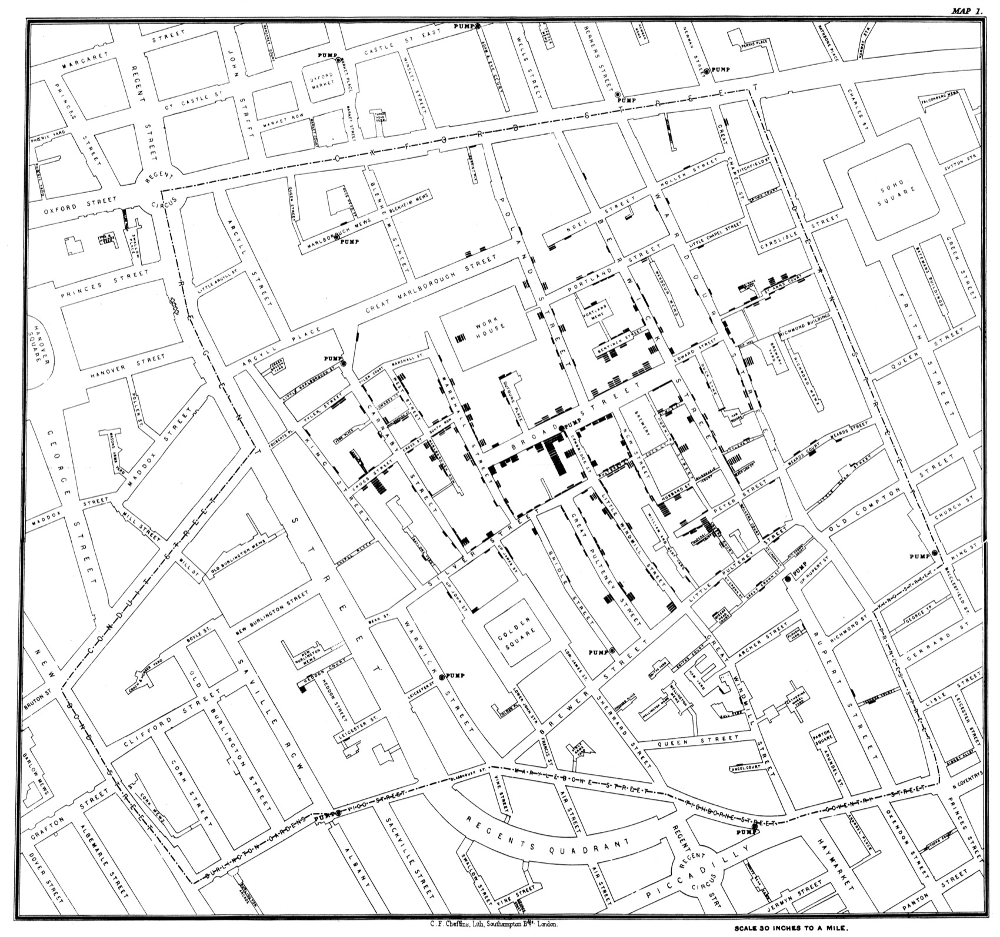
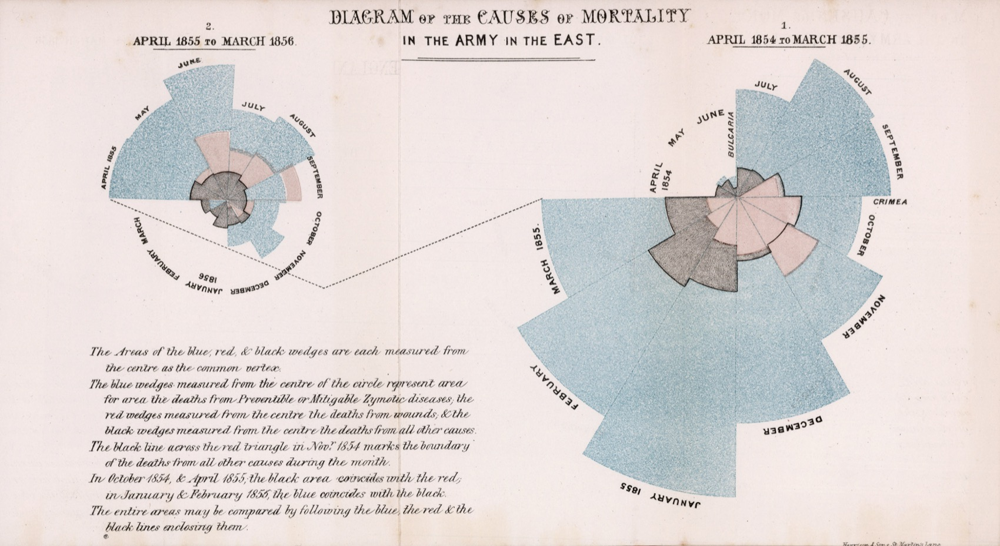
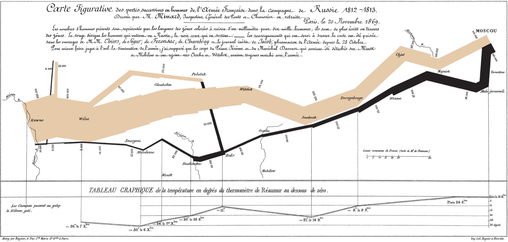

Where you draw the line decides the story. Can a reader see it?
Bring · 20 minutes at home
In class, we do not lecture at you
Write it so a classmate who does not know your project could draw it.
| Field | What to write |
|---|---|
| Decision | the choice this diagram supports, in one line |
| Data | the numbers, or a pasted table / CSV (10 rows or fewer) |
| Threshold | the line, its unit, and where it came from: code, precedent, client, physics, or my guess |
| Audience | who looks at it, and for how long (e.g. client, 30 s) |
| Must show | the one thing the reader must see at a glance |
If you cannot write the threshold line, that is your finding for this week. Bring it anyway.
Session 1 · Where is the line?
Schematic redraw of the 23 earlier flights, after Dalal, Fowlkes & Hoadley (1989) and Tufte (1997). The engineers’ real charts never put temperature on an axis.
The threshold was there in the data: 53°F was the edge of experience. Why did no chart draw it?
Open the Threshold Explorer on your own device. Tick Blind mode. Set all five thresholds alone, with no talking. Then reveal together.
Same data, same rules. Did we all recommend the same facade? If not, where did the disagreement live: in the data or in the lines?
Week 3 facade data · starter_kits/spreadsheet-thresholds/decision_matrix_filled_example.csv
Same number (48.4), two pictures, two verdicts. Which one is honest about a low-confidence proxy?
Computed by the Threshold Explorer (“flip” readout) on the Week 3 rules
Five thresholds, but only two can change the answer. Which two belong on the object card, and which three can go in a footnote?
Illustrative site. 400 m / 800 m are common planning rules of thumb for walking catchments, not a Hong Kong standard.
Draw this line for a 75-year-old walking at half speed. Does the ring shrink, or does the line move?
WHO Global Air Quality Guidelines (2021); HK EPD Air Quality Objectives (in force 1 Jan 2022). In the same revision the HK 24-hour limit tightened from 75 to 50 µg/m³, but allowed exceedances rose from 9 to 35 a year.
Write a recommendation for this site that is true under all four lines. Is a threshold just a number, or a number plus a counting rule?
Old figures, read for their lines

Threshold in the picture In a later version made for the parish inquiry (not the one shown), Snow added a dotted boundary: the points that were equally far on foot from the Broad Street pump and from the next nearest pump. The deaths sat inside the line.
Snow’s boundary followed streets, not a circle. Compare it with the ring on our map two slides back.

Threshold in the picture There is no number to clear. The line is relative: preventable disease against wounds. When the outer wedge dwarfs the inner one, the case is made.
Your threshold could be relative (“better than baseline by X”) instead of absolute. Which would your audience trust more?

Threshold in the picture The temperature line along the bottom is tied to the shrinking army above it. You can see the band collapse as the cold drops. Challenger’s charts were missing exactly this axis.
What is the “temperature line” in your project: the variable that, once it crosses a value, changes everything?
Every pattern draws the line inside the figure. A threshold that only appears in a caption is a threshold the reader will miss.
Which pattern fits your brief? Is there a sixth one we have not drawn?
Pavilion siting · multi-objective
Illustrative values, not the student’s data: 14 candidate sites, 8 on the front (filled), 6 dominated (hollow).
Would you write comfort as an objective or as a constraint (ε)? Each choice gives a different set of “optimal” sites.
Pavilion siting · defining the comfort threshold
UTCI category boundaries (26 / 32 / 38 / 46 °C) follow the standard UTCI assessment scale. The site values are illustrative.
Which definition can you defend from the comfort literature, and does your Pareto front survive the switch?
Studio massing · volume options
Illustrative massings. The 25° test is a UK rule of thumb (BRE 209), borrowed here; check the local code (in Hong Kong, the Building (Planning) Regulations).
Stepped clears the area target by about 5%. What happens to it if the brief adds one more studio?
Pavilion siting (research track)
Studio massing (studio track)
Replace every number with your own. If a field is blank, that is what you bring to the swap.
Undergraduate · studio track
PhD · research track
In the swap, each of you draws the other track’s brief. Studio eyes on a Pareto plot, research eyes on a section.
Ten minutes. Put both of your briefs in Slack before we restart.
Session 2 · Swap studio
Decision Evidence Variation Output Threshold Action
Swap ring: Student 1 → Student 2 → Instructor → Student 1. You draw the Brief 1 of the next person in the ring, and your own brief comes back to you drawn three ways. If another student attends, they join the ring.
1 · By hand · 8 min
Paper and two pens: black plus one colour for the line. No software. Sketch fast, but the threshold must be drawn in.
2 · With AI · 10 min
Any chat or image tool. Paste the brief. Save the prompt and every output, including the bad ones.
3 · From the data · 10 min
Spreadsheet chart, the Threshold Explorer, or AI-written Python that you run. The numbers must come from the brief.
Brief 2 goes round the ring in reverse as the exit task: one route of your choice.
Paste into any AI tool, then paste your brief “You are drawing a decision diagram for an architecture audience. Draw one figure in which the threshold is a visible line or band inside the plot, the options are labelled directly (no legend), and the title states the takeaway. Use only the numbers in my brief. If you need a number that is not there, ask me. If you can, give me Python/matplotlib code instead of an image.”
Image generators draw pictures of charts They can invent ticks, nudge the line, or round 48.4 down to “under 48”. Fine for a layout sketch, but never as evidence.
Code is checkable A chart made by code you ran is a Week 8 “workflow/code” output: run it, check the units, and test it with one known value.
Put every drawing in Slack. The brief’s author judges their own three versions; everyone else adds one note.
| Check | Hand | AI | Data |
|---|---|---|---|
| 3-second test: can you tell what’s compared and who wins? | |||
| Is the threshold drawn at the right value, in the right unit? | |||
| Is uncertainty visible (band, range, confidence)? | |||
| Did anything get invented (numbers, options, labels)? | |||
| Which one goes on your object card, and what would you steal from the others? |
Which route told the story best, and was it the same route that got the numbers right?
Each author takes one threshold from their winning diagram. The other two each take one role and attack it once. Rotate roles each round so everyone plays all three.
Roles
Author answers with three things
Recommendation sentence, Week 9 version For [audience], I recommend [option] because it clears [threshold] ([source]). This changes if [threshold] moves by [how much] or if [counter-argument] holds.
Worked from today’s facade data For the client team, I recommend Hybrid because it passes all five thresholds in our Week 3 matrix. This changes to Deep fins if the solar gain line tightens by about 19% (to ≤ 38.9) or the depth allowance drops below about 0.62 m.
Object this week: the diagram of your own brief that you chose, and the line inside it.
Did Which version did you choose (hand, AI, or data), and what is its one message?
Assumed Where does the line come from, and who chose it?
Risk How far can it move before the recommendation flips? What did AI get wrong?
Verify Which number in the figure did you check against the brief?
Post the four steps under your chosen diagram in Slack. The graded unit is the posting plus an honest reconstruction, not how well you spoke.
Bring
Weeks 10–11, with two students No vote needed. Each of you writes one line in Slack: clinic (1-1 help finishing A4) or workgroup (building your own GH/Python pipeline). With two of you, we can run both modes side by side.
Week 9 · feeds A3 + A4